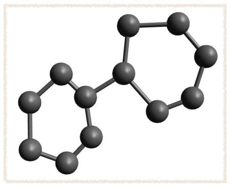
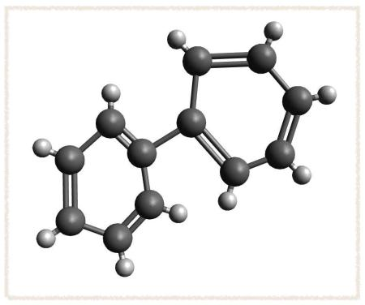
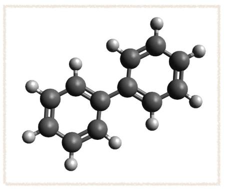
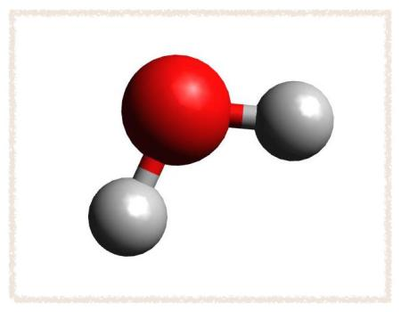
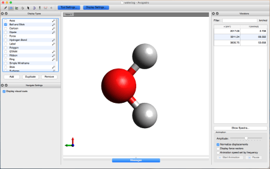
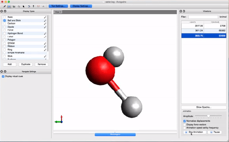

Laboratory 1 Avogadro and Gaussian
Installations
We need a couple of programs installed on your computers before we start!
Everyone should install these molecular visualization programs:
Avogadro
VMD
Windows users should also install these:
PuTTY
WinSCP
Mac users should also install this:
CyberDuck
Avogadro
Avogadro is an advanced molecule editor and visualizer designed for cross-platform use in computational chemistry, molecular modeling, bioinformatics, materials science, and related areas. It offers flexible high quality rendering and a powerful plugin architecture. It is a free, open-source program available for download from their website.
We will use Avogadro to build molecules, generate input files, and visualize results throughout this module. Let's start with a simple warm-up to get you used to building, minimizing, and measuring chemical structures.
Drawing Structures- Open Avogadro. It will open to a clean workspace. Tools are shown on the upper left hand corner of the window:
- Draw Tool
- Navigate Tool
- Bond Centric Manipulate Tool
- Manipulate Tool
- Selection Tool
- AutoRotate Tool
- AutoOptimization Tool
- Measure Tool
- Align Tool
To the right of the list of tools are two buttons: Tool Settings and Display Settings. To begin, select the Draw Tool and make sure Tool Settings is selected. - Tool Settings provides a window on the left for you to modify settings of the tool you are currently using. In this window, set the Element field to Carbon, Bond Order to single, and uncheck the Adjust Hydrogens button.
- Click in the main window to place a carbon atom. Drag from one atom to another location to make a carbon-carbon bond. Sketch out the skeleton of the biphenyl structure:
 - In your Tool Settings window, select Double for your bond order and re-enable Adjust Hydrogens.
- Click alternating bonds to convert the system to two conjugated rings:
 - This is a very uncomfortable geometry for biphenyl, so we want to allow the molecule to relax into a lower energy conformation. In the main menu bar, Go to
Extensions → Molecular Mechanics → Setup Force Field
Pick the MMFF94 Force Field, 500 steps, the Steepest Descent Algorithm, and a convergence criteria of 10e-2. Click OK. - Now go to Extensions → Optimize Geometry. You should get a structure that looks like this:
 - The Measure Tool allows you to measure distances, angles, or dihedral angles. The measurements show up in the lower left corner of the main window.
- Click on any two atoms to measure a distance.
- Click on any three atoms to measure the angle between them.
- Click on four atoms to measure the dihedral angle between them.
- Right click to clear the measurement and the list of selected atoms.
- Measure the dihedral angle between the two phenyl rings.
- The Bond Centric Manipulate Tool provides a "chemically-oriented" way to change bond lengths, angles, and dihedrals.
- Click on the bond between the two phenyl rings. A rectangle will be drawn with the bond at the center. You can rotate this plane about the bond by clicking on the bond and dragging.
- Right click on one of the atoms in the selected bond and drag to change the bond length. The current bond length is listed in the bottom left corner.
- Left click on one of the atoms in the selected bond and drag to change the bond angle. The atom you click on will move in the highlighted plane, with the other atoms as the center of rotation. The appropriate angles will update interactively.
- Click on an atom neighboring the bond and drag to change the dihedral angle. Adjust the phenyl-phenyl ring dihedral until it is near 90º.
- Re-optimize the geometry, this time using the AutoOptimization Tool, MMFF94, and Conjugate Gradients. What is the phenyl-phenyl dihedral angle now? What does your chemical intuition say about the correct phenyl-phenyl angle?
- Start with a clean workspace.
- On the main menu, go to Build → Insert → Peptide
- We're going to create a peptide analogue that contains a single amino acid residue, alanine (Ala), flanked by two peptide bonds and capped at each end with methyl groups. To do this, insert the peptide sequence Gly-Ala-Gly. Close the "Insert Peptide" window
- The main window will now contain the peptide, but it will have all of the atoms selected (surrounded by a blue halo). You may have to use the Navigate Tool to adjust your view. Left click-and-drag will rotate the molecule about its center; right click-and-drag will move absolute position of the atom in the window. Use the scroll wheel on your mouse to zoom in and out. To unselect atoms (get rid of the blue halo) use the Selection Tool and right click in the empty space around the molecule.
- We need to remove a few atoms from the peptide to form the capped alanine structure:
This can be accomplished in one of two ways:- Use the Selection Tool to pick a few atoms and remove them using the "Delete" key. You can select more than one atom at a time by holding the "⌘Command" key.
- Use the Draw Tool and right-click on any (unselected) atom and it will disappear. You will need to make sure "Adjust Hydrogens" box is selected or add in the additional hydrogens to correct the structure as you go along.
- I've labeled each of our peptide atoms with numbers below. We will use the methyl group side chain of the Ala residue as our visual anchor point (atoms 10, 11, 12, and 13). Conformations will generally be oriented so that the Ala methyl group is at the top and slightly rotated forward.
Our "capped alanine" structure is an alanine residue (chain atoms 4, 5, and 6) capped with a residue preceding it (chain atoms 1 and 2) and a residue succeeding it (chain atoms 14 and 15). Atoms of the residue preceding it are denoted "-1"; atoms of the residue succeeding it are denoted "+1". Here is a list of the atoms that we are concerned with:
- Atom 1 - Cα-1
- Atom 2 - CO-1
- Atom 4 - NH
- Atom 5 - Cα
- Atom 6 - CO
- Atom 14 - NH+1
- Atom 15 - Cα+1
- When describing the structure of a peptide chain, we typically look at the φ and ψ angles. The φ angle is the torsion angle specified by the spatial coordinates of CO-1, NH, Cα, and CO. In this conformation, φ = 180º
- The ψ angle is the torsion angle specified by the spatial coordinates of NH, Cα, CO, and NH+1. In this conformation ψ = 180°
- One way to optimize the structure of the peptide (i.e. find the lowest energy conformation) is to do a conformational search. To do this, first select
Extensions → Molecular Mechanics → Conformer Search from the main menu. - Perform a systematic rotor search. There should be 4 rotatable bonds. A systematic rotor search will sample 575 different conformations. When the search is complete measure the energy using
Extensions → Molecular Mechanics → Calculate Energy
What energy did you get? Measure your φ and ψ angles. - Now, perform a steepest descent minimization following the conformational search. Do you get a lower energy? What are your φ and ψ angles?
- Using the Measure Tool and Bond Centric Manipulate Tool, change both the φ and ψ angles to 0º. What is the energy of this conformation? Why is the energy so high?
- Turn on the AutoOptimization Tool and drag around the atoms until you find a low energy conformation (around -70 kcal/mol or so). What are the φ and ψ angles in this conformation?
The Command Line Interface
The command-line interface (CLI) is a tool into which you can type text commands to perform specific tasks. This is in contrast to a graphical user interface (GUI): pointing and clicking on menus and buttons on the desktop or within applications. Using a CLI you can directly control the computer by typing commands, allowing many tasks to be performed quickly and more efficiently than using a GUI.
The Basics
- First, we will log on to a few remote computers that we've set up for this lab. We will give each of you a unique address for you to use.
- Windows users - Open PuTTY. (We downloaded and installed it last class). Open a new connection and use the address and password we give you.
- Mac users - Open up the Terminal application. It can be found on your Mac under Applications → Utilities → Terminal. To log on to the machine we will use
sshand the address. You will probably get a message: The authenticity of host can't be established. Are you sure you want to continue connecting? Answer yes and press return.
- The user interface that accepts your typed commands and displays data on the screen is called a shell. Right now the shell is waiting for you to give it a command. Once you enter a command it will respond. Try typing
ls
then hit enter. It will display a list of the contents of the directory (folder) that you are in: all the files and folders. What you've done is analogous to opening up a folder by double clicking on the icon to see what is inside. We call each folder a directory. - We can change directories using the command
cd [name of your directory]
Switch directories then list the contents of your new directory. For example,cd lab1/ lsWhen you cd, you can auto-complete a directory name by typing the first few letters then pressing tab. Your directories might be listed in a different color than your files. This helps you to easily identify which is a file and which is a directory. Try cd-ing into a file.cd textfile.txt
It doesn't work! It gives you an error "Not a directory". To go "up" a directory (into the parent directory) we usecd ../
- To create a directory we use the command
mkdirfollowed by the name of your directory Try making a new directory. Name it anything you want.mkdir Susan
We can remove this directory using the commandrmdir Susan/
Note: thermdircommand will only remove an empty folder. If there is anything inside of the folder we need to add a flag,-rf. Flags are preceded by a hyphen and tell the computer to complete the command using certain options.rmdir -rf Susan/
Make a new directory and navigate into it. - You can create a file using the command
touchfollowed by a filename and remove it with the commandrm [filename]Try making and removing a file called "awesome.txt"touch awesome.txt
Don't use any spaces in your file names. It is important to note that when werma file or a directory, it is gone forever... there is no "Trash bin" where we can retrieve it. - To edit text files we will use the vim editor. It is a very powerful tool; we will only use the very simplest functions it has to offer. You can create a file and open it in vim using just one command:
vi cool.txtTo add text, we first have to enter the "insert mode" by pressingi. Now you can type just like any other text editor. Type two sentences on consecutive lines in the file.Betsy had blueberry pie for dessert.
To exit "insert mode", press "esc". Vim will allow us to navigate through large files, copy, paste, and insert text. More on this later. To write your file (save it) and quit vim type:
Dominic had apple cobbler.:wq
and press enter. Both thewand theqshould be lowercase. - There are many occasions where we will want to look at long files. Instead of opening them up in a text editor on our computer, we can use the command
lessfollowed by the file name This will open up the file and allow us to view a portion of it. We can search for strings and navigate the file more easily than if we had opened the whole file using a regular text editor. We will also come back to this a little bit later. - We can copy and paste files using the command
cp [original file] [destination]The destination could either be a new name in the same directory or it might be in an (already existing) directory. For example, if I start in my directory Susan:cp cool.txt ../cool.txtwill paste the filecool.txtintolab1/. Remember that../goes to the parent directory. I can also copy the file to a new file in the same directory (with a new name):cp cool.txt boring.txtIt is important to note that if youcpa file into another directory, and that directory already has a file with the same name, the file will be overwritten. (There is no warning message!) - To search for a "string" (a sequence of characters) in a file we use the command
grep [string] [file I am searching]For examplegrep Betsy cool.txt
The result will be each line in which that string occurs. Strings are case sensitive. Again... more on this command later.
Gaussian
Gaussian is a computer code (based on the use of gaussian basis functions) which performs molecular electronic structure calculations. It was first developed in the late 1960's-early 1970's at Carnegie-Mellon University under John Pople.
To begin, we are going to use Gaussian to optimize the structure of alanine. I've made an input file for you to start with. After that, we will look at some properties of water (geometry, dipole moment, and vibrational frequencies) to compare to experimental values. We will calculate each of these properties with a variety of basis sets and methods. Each combination of methods and basis sets will yield slightly different results. Let's first take a look at how to submit a calculation and then we'll evaluate how well each basis set/method combination does in its prediction of the experimental values.
Basic Gaussian Job- Navigate to the alanine directory
cd lab1/alanine/
- List the contents. You will see two files. One is the input (ala.inp) and the other is the submission script (g16.pbs)
- Take a look inside the input file
less ala.inp
The information you see tells Gaussian the parameters of the job, what computer resources to use, and the coordinates of the molecule. We will take a closer look at this later. Pressqto quit and return to the command prompt - Now look at the submission script
less g16.pbs
This file will give the computer instructions on what resources the job will need and where to put the files that are generated throughout the calculation. - To submit the job to the queue, all we need to do is enter the command
qsub g16.pbs
- You can check the status of the job by entering the command
qstat
When the job is complete it will disappear from the queue - Open
ala.logwith thelesscommand. You will see that a Gaussian output file has a lot of information. - There are a few different ways to navigate through a file using less. The most simple is just to use the up and down arrows. If we want to skip to the bottom or the top, we can type G or g, respectively. Go to the very bottom of the file.
- The first thing you should check is to see that the job terminated without error. If the job was successful, the last line of the file will say something like:
Normal termination of Gaussian 09 at Tue Jan 31 14:49:16 2017.
- Look a few lines above the "normal termination" line... There should be some random quotation... Every successful job spits out a different one. Just a fun little tidbit.
- ALL THINGS ARE POSSIBLE EXCEPT SKIING THROUGH A REVOLVING DOOR.
- Return to the command prompt by pressing
q
- Now we want to look at the results on our local machine. Using WinSCP or CyberDuck, copy the file to your Desktop
- Open up the file using Avogadro. Looks like a good looking Alanine residue to me!
- Measure the φ and ψ dihedral angles as you did last class. Recall that φ is the C-N-C-C angle and ψ is N-C-C-N. Use these new measurements for your assignment.
- Using those awesome Avogadro skills, build a single water molecule.

- Avogadro has some neat built-in extensions, one of which makes a Gaussian input file. Under the main menu, go to Extensions → Gaussian. There are several options.
- Choose any title you like. Pick something descriptive... preferably with the method and basis set you are using. (like "h2o b3lyp sto-3g")
- Calculation: Frequencies (this will do a geometry optimization followed by a frequency analysis)
- Processors: 1
- Theory: B3LYP and Basis: STO-3G
- Charge: 0
- Multiplicity: 1
- Output: Standard
- Format: Cartesian
- Click generate and save the file to your directory. We typically use the extension ".com" or ".inp" on our input file name. (e.g. water.inp)
- The file you generated has just the bare bones of an input. Every Gaussian input has several sections:
- Link 0 commands: Each of these lines begins with %. They are optional. We don't have any of these in this first example.
- Route section: Each of these lines begins with #. They follow immediately after the Link 0 commands (no blank space in between). They specify the desired calculation type and model chemistry. There are also keywords that appear on this line that give further specification as to how to complete the requested job.
- BLANK LINE
- Title section: This can be anything. You should try to be descriptive with your title.
- BLANK LINE
- Molecule Specification: defines the molecular system to be studied. The first line in this section consists of two numbers, the charge and the multiplicity. This is followed by the atomic coordinates of all atoms, either in Cartesian form or as a z-matrix.
- BLANK LINE
- Optional additional sections: Some jobs require additional input. That additional information goes in this section.
- BLANK LINE (every input file must end with a blank line!)
- Look at the route section of your input file. It should look like this:
#n B3LYP/STO-3G Opt Freq
This is telling Gaussian to first do a geometry optimization followed by a harmonic frequency analysis, using the method B3LYP and the basis set STO-3G - To compute the dipole, we need to add a keyword to the route section of our input file. After "Freq", add the keyword "Density=Current":
#n B3LYP/STO-3G Opt Freq Density=Current - Click Generate and save the file to your Desktop with the name "h2o.inp" Go look at it on your Desktop. Avogadro probably added the extension ".com". Remove that. Look at the file in a text editor. If the first line says
%NProcShared=2 remove it.
The very first line should say
#n B3LYP/STO-3G Opt Freq Density=Current
- To submit the job, we first have to get the input file in the right directory on the computer. Copy h2o.inp from your Desktop to the directory
~/lab1/water/opt/using WinSCP or CyberDuck - After you have an input file, running the job is easy (...provided the input file is correct!) Return to the command line and navigate to the directory that you put your h2o.inp file into.
- Just as before, use the command
qsub g16.pbsto submit your job to the queue.
- Back to our local machine: copy the file h2o.log onto your Desktop using WinSCP or CyberDuck
- Let's take a look at the results using Avogadro. Go to the directory that contains your .log file. Right-click on the file and then open with Avogadro. Avogadro should load your molecule. You will see a panel on the right that we didn't see before.

This panel contains the vibrational analysis of our molecule. Click on one of the vibrational modes and press Start Animation below. You will see the vibrational mode corresponding to that frequency!
- If you stop the animation, you can use the Measure Tool on the Avogadro tool bar to measure the bond lengths and angle just as we did before.
- To find the calculated dipole moment, let's return to the raw output. Using
grep(in the command line) we can find the string "Dipole moment" in the .log file. Be careful about your uppercase/lowercase letters.grepis case sensitive. When you entergrep "Dipole moment" h2o.log
You should get an output that looks something like this:
Dipole moment (field-independent basis, Debye):
Dipole moment (field-independent basis, Debye):
Dipole moment (field-independent basis, Debye):
That's not especially useful. What we want is the line immediately following this line. - To get the calculated values, we add a flag -A then the number of lines we want following the string we
grep-edgrep -A 1 "Dipole moment" water.log
This command results in a more useful output: Dipole moment (field-independent basis, Debye):
X= 0.0000 Y= -1.6308 Z= 0.0000 Tot= 1.6308
--
Dipole moment (field-independent basis, Debye):
X= 0.0000 Y= -1.5935 Z= 0.0000 Tot= 1.5935
--
Dipole moment (field-independent basis, Debye):
X= 0.0000 Y= -1.5935 Z= 0.0000 Tot= 1.5935 - When we set up the calculation, we asked Gaussian first to optimize the structure, then to find the vibrational frequencies. Gaussian took three "steps" before it found the optimized structure; it calculated the dipole moment for each step. Since we only care about the optimal structure, we take the last of these values. Gaussian gives the vector in the x, y, and z directions as well as the total magnitude of the vector, 1.5935. We are interested in the total magnitude.
Assignment 1: Avogadro and Gaussian
Biphenyl- What is the optimum phenyl-phenyl dihedral angle in biphenyl?
- What is the experimental value?
- How was the experimental value derived?
- Why might yours differ?
- Why did you get different results when you started the calculation from the planar biphenyl vs. 90° biphenyl?
- Which optimized structure is correct?
- What chemical interactions are stabilizing the low energy structure for the capped alanine?
- What is a Ramachandran plot? Find one for alanine.
- Where do your values of φ and ψ lie on the Ramachandran plot? What does this correspond to?
- Using the following 4 methods and 4 basis sets, optimize the structure of water and calculate some experimental properties: bond length, HOH angle, dipole moment, and the vibrational frequencies.
- Methods (with the 6-31++G** basis set)
- HF
- BLYP
- B3LYP
- MP2
- Basis sets (with the B3LYP method)
- STO-3G
- 6-31G
- 6-31++G**
- aug-cc-pVTZ
- Methods (with the 6-31++G** basis set)
- Which method and basis set combination offers the best agreement with experiment for each calculated property? Make a table with the calculated values and the relative error between calculated and experimental value. The time it took to do the optimization and the frequency calculation can both be found by
grep-ing the word "Elapsed" in your .log file. Include this information in your table. - Hand in the table as an excel spreadsheet
- Met-enkephalin is an opioid peptide neurotransmitter. Many local minima exist for this molecule, so it is a challenge to reach the global minimum. First, build the peptide. Its sequence is Tyr-Gly-Gly-Phe-Met. When you insert the peptide from the build menu, you will see two drop-down fields, N terminus and C terminus. Set these to NH3+ and CO2-, respectively.
- Measure the energy of the structure when right after you insert it. If you insert everything as a straight chain, you should get an energy of around 648 kJ/mol.
- What is the lowest energy conformation you can find? I got my structure down to about -16.2 kJ/mol. Use the MMFF94 force field to evaluate your energy. Use any of the skills you learned in the Avogadro tutorial as well as any other resources (internet databases or scientific literature) to find the lowest energy structure. (To get full credit on this part you need to find a structure having an energy less than 0 kJ/mol)
- Can you find multiple unique stable structures? Describe the differences between local minima and global minima. Which of the stable structures are local minima and which is the lowest energy structure that you can find (potentially the global minimum).
- Speculate on the chemical interactions stabilizing the low energy structure(s).
- SAVE YOUR .xyz file.
- Return to your alanine optimization that we started the Gaussian tutorial with. Modify the input file to calculate the vibrational modes after a geometry optimization. Be careful with your choice of basis set and method! Start small to see how long it will take.
- To do any vibrational calculation, you have to optimize it with the same method and basis set that you are using for the freq calculation. For this reason, your keywords should be Opt Freq. (Though you won't need Density=current)
- Look at the molecule in Avogadro. What are the φ and ψ angles? Include this and your Ramachandran plot in your report. How many vibrational modes should exist for this molecule? Is that how many there are?
- Comment on the types of vibrations you see. Correlate the character of the vibrational mode (e.g. the character of a particular mode looks to be mostly composed of C-H stretch) to the vibrational frequency assigned to it. Are they reasonable?
- Lowest energy Met-enkephalin .xyz file
- Alanine .log file from opt freq calculation
- Table of water data as an Excel spreadsheet